1020D17 Crankshaft oil seal front cover - R.R. and Replace seals for engines with oil pump on timing side crankshaft and heat exchanger - with engine removed
- Path
- Procedures > 10 ENGINE > 1020 CRANKCASE SUMP AND COVERS > 1020D OIL SEALS ON CRANKSHAFT > 1020D17 Crankshaft oil seal front cover - R.R. and Replace seals for engines with oil pump on timing side crankshaft and heat exchanger - with engine removed
- Kind
- repair procedure (removal / refitting; the operation number is the code)
- Applies to
- engines: 2.4 JTD 10V; all production periods
- Interactive page
- https://sloeber94.github.io/elrnDB-lThss/en/#/498089
Applies to: engines: 2.4 JTD 10V; all production periods
 Removing
Removing
 Refitting
Refitting1. Use tool A on the automatic belt tensioner to loosen the tension of the engine components single belt.
 | Description | Code | Function |
|---|---|---|---|
1 | Spanner | 1.860.966.000 | Automatic belt tensioner rotation for single components belt |
2. Insert tool A in the special opening to keep the automatic belt tensioner in the "fixed" position.
| Description | Code | Function |
|---|---|---|---|
2 | Lock | 1.870.645.000 | Automatic belt tensioner retainer for single components belt |
3. Release the engine components single belt tensioner plug.
4. Loosen the engine components single belt tensioner bolt.
5. Remove the engine components single belt.
6. Remove the engine components single belt pulley plug.
7. Undo the bolt (7a) and remove the engine components single belt pulley (7b).
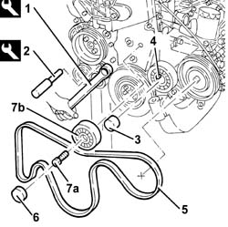
Applies to: engines: 2.4 JTD 10V; all production periods
1. Undo the bolts (1a) and remove the timing drive belt covers (1b).
2. Undo the bolts (2a) and remove the power unit reaction rod mounting bracket (2b).
3. Undo the bolts (3a) and remove the crankshaft pulley (3b).
4. Loosen the timing belt tensioner nut.
5. Release the timing drive belt.
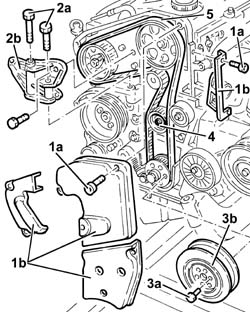
Applies to: engines: 2.4 JTD 10V; all production periods
1. Undo the bolts (1a) and remove the air conditioning compressor (1b) complete with support.
2. Undo the engine oil filter using a suitable tool and remove it.
3. Unscrew the connector.
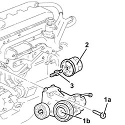
Applies to: engines: 2.4 JTD 10V; all production periods
1. Fit tool A.
| Description | Code | Function |
|---|---|---|---|
1 | Counter-torque | 1.860.846.000 | Flywheel lock |
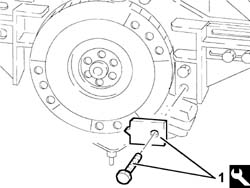
Applies to: engines: 2.4 JTD 10V; all production periods
1. Undo the bolt (1a) (left hand thread) and remove the toothed drive pulley (1b).
2. Undo the bolts (2a) and remove the automatic belt tensioner for the engine components single belt (2b).
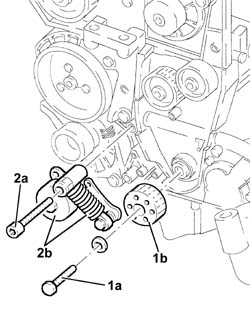
Applies to: engines: 2.4 JTD 10V; all production periods
- Rotate the engine on the overhaul stand.
1. Disconnect the turbocharger oil outlet pipe from the crankcase sump.
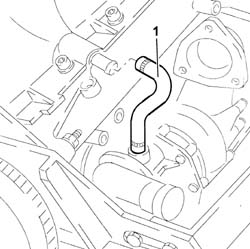
Applies to: engines: 2.4 JTD 10V; all production periods
1. Undo the bolts (1a) and remove the engine oil dipstick assembly (1b).
2. Disconnect the condensed oil return pipe from the crankcase sump.
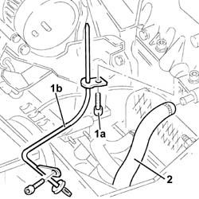
Applies to: engines: 2.4 JTD 10V; all production periods
1. Undo the bolts (1a) and remove the plates (1b) connecting the crankcase sump to the intermediate shaft support.
2. Undo the front and rear bolts (2a) fixing the crankcase sump using tool A (2b).
| Description | Code | Function |
|---|---|---|---|
2b | Spanner | 1.860.834.000 | Loosen/tighten front and rear crankcase sump bolts |
3. Undo the side bolts (3a) fixing the crankcase sump using tool A (3b).
| Description | Code | Function |
|---|---|---|---|
3b | Spanner | 1.860.833.000 | Loosen/tighten crankcase sump side bolts |
4. Remove the crankcase sump.
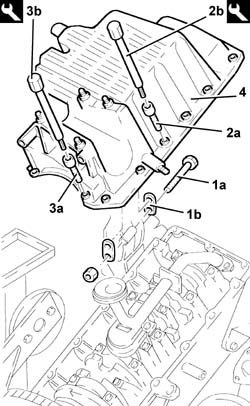
Applies to: engines: 2.4 JTD 10V; all production periods
1. Undo the bolts (1a) and remove the engine oil intake duct (1b).
2. Remove the O-ring.
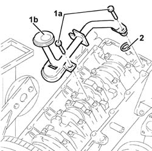
Applies to: engines: 2.4 JTD 10V; all production periods
1. Undo the bolts (1a) and remove the oil pump (1b) complete with gasket (1c).
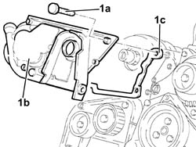
Applies to: engines: 2.4 JTD 10V; all production periods
Refitting
Removing- Fit the oil pump complete with gasket and tighten the bolts to torque C.
 | Value - daNm | Fastening | Component | Ø |
|---|---|---|---|---|
. | 0.9 ÷ 1.2 | Bolt | FRONT COVER CRANKSHAFT | M6 |
- Fit the engine oil intake complete with O-Ring and secure it using the bolts.
| Value - daNm | Fastening | Component | Ø |
|---|---|---|---|---|
. | 0.9 ÷ 1.3 | Bolt | OIL SECTION PUMP | M6 |
- Apply sealant P to the entire perimeter of the crankcase sump.
 | Description | Qty. | Component | Type | Classification |
|---|---|---|---|---|---|
. | Dow Corning 7091 | - | - | Silicone sealant | - |
- Fit the crankcase sump.
- Tighten the crankcase sump side bolts to torque C using tool A.
| Value - daNm | Fastening | Component | Ø |
|---|---|---|---|---|
. | 0.9 - 1.2 | Side bolts | OIL SUMP | M6 |
| Description | Code | Function |
|---|---|---|---|
. | Spanner | 1.860.833.000 | Loosen/Tighten engine oil sump side bolts |
- Tighten the crankcase sump front and rear bolts to torque C using tool A.
| Value - daNm | Fastening | Component | Ø |
|---|---|---|---|---|
. | 2.3 ÷ 3.3 | Front and rear bolts | OIL SUMP | M8 |
| Description | Code | Function |
|---|---|---|---|
. | Spanner | 1.860.834.000 | Loosen/Tighten front and rear engine oil sump bolts |
- Tighten the bolts and the plates connecting the crankcase sump to the intermediate shaft support.
- Connect the condensed oil return pipe to the crankcase sump.
- Fit the oil dipstick assembly and tighten the bolts.
- Connect the turbocharger oil outlet pipe to the crankcase sump.
- Fit the engine components single belt tensioner.
- Fit the toothed drive pulley and tighten the bolt (left hand thread) to torque C.
| Value - daNm | Fastening | Component | Ø |
|---|---|---|---|---|
. | 32.9 ÷ 44.1 | Bolt | TOOTHED DRIVE PULLEY | M16 |
- Remove tool A.
| Description | Code | Function |
|---|---|---|---|
. | Counter-torque | 1.860.846.000 | Flywheel lock |
- Tighten the connector fastening the engine oil heat exchanger to the recommended torque.
| Value - daNm | Fastening | Component | Ø |
|---|---|---|---|---|
. | 6.0 | Connector | ENGINE OIL HEAT EXCHANGER |
- Place the engine oil filter in its housing and tighten it to the recommended torque after having lubricated the seal with engine oil.
| Value - daNm | Fastening | Component | Ø |
|---|---|---|---|---|
. | 1.4 - 2.0 | - | CARTRIDGE OIL FILTER |
- Fit the air conditioning compressor complete with support and secure it using the bolts.
1. Remove the oil pump bolt shown.
2. Temporarily fit the toothed timing drive belt on the drive pulley.
3. Fit tool A.
| Description | Code | Function |
|---|---|---|---|
3 | Template | 1.860.905.000 | Engine tuning |
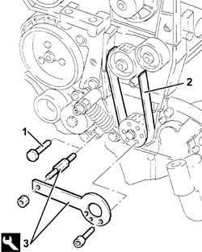
Applies to: engines: 2.4 JTD 10V; all production periods
1. Rotate the toothed driven pulley until the timing references are aligned.
2. Fully fit the toothed timing drive belt.
3. Use a screwdriver in the opening (3a) for leverage until the reference on the tensioner (3b) is aligned with the opening reference (3c) and tighten the belt tensioner nut (3d) to torque C in this position.
| Value - daNm | Fastening | Component | Ø |
|---|---|---|---|---|
3d | 4.6 ÷ 6.6 | Nut | TIMING BELT TENSIONER | M10 |
- Remove tool A.
| Description | Code | Function |
|---|---|---|---|
. | Template | 1.860.905.000 | Engine tuning |
- Rotate the crankshaft through two revolutions.
- Recheck that the timing references and the tensioning references on the timing belt tensioner are aligned.
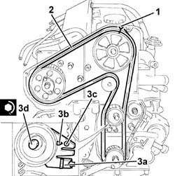
Applies to: engines: 2.4 JTD 10V; all production periods
1. Fit tool A in the special opening to keep the automatic belt tensioner for the engine components drive belt in the "fixed" position.
| Description | Code | Function |
|---|---|---|---|
1 | Lock | 1.870.645.000 | Retaining tensioner for various components drive belt |
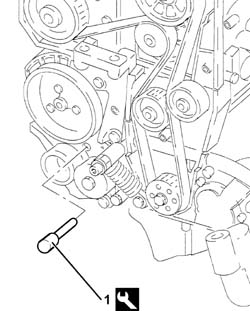
Applies to: engines: 2.4 JTD 10V; all production periods
- Fit the crankshaft pulley and tighten the bolts to torque C.
| Value - daNm | Fastening | Component | Ø |
|---|---|---|---|---|
. | 2.3 - 3.3 (counter-balance shaft pulley side) | Bolt | CRANKSHAFT PULLEY | M8 |
- Fit the timing belt covers and secure them using the bolts.
- Fit the power unit reaction rod mounting bracket and fasten it using the bolts.
- Fit the engine components single belt pulley.
- Fit the engine components single belt.
1. Rotate the fixed tensioner (1a) for the engine components drive belt using tool A (1b) until tool A (1c) can be released, then tighten the cam tensioner bolt (1d) to torque C.
| Description | Code | Function |
|---|---|---|---|
1b | Spanner | 1.860.968.000 | Tensioning engine components drive belt |
| Description | Code | Function |
|---|---|---|---|
1c | Lock | 1.870.645.000 | Retaining tensioner for various components drive belt |
| Value - daNm | Fastening | Component | Ø |
|---|---|---|---|---|
1d | 4.6 ÷ 6.6 | Bolt | COMPONENTS SINGLE BELT CAM BELT TENSIONER ENGINE | M10 |
- Remove tool A.
| Description | Code | Function |
|---|---|---|---|
. | Lock | 1.870.645.000 | Retaining tensioner for various components drive belt |
- Fit the plugs in the pulley and the belt tensioner for the engine components single belt.
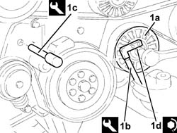